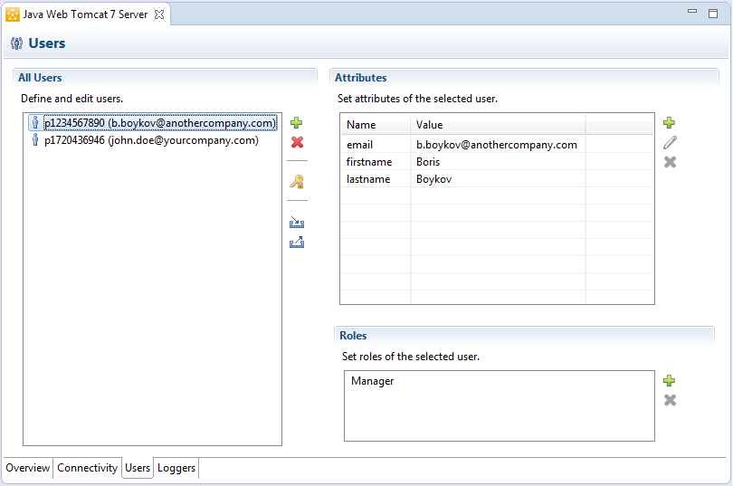

Security Testing Locally
When you add user authentication to your application, you can test it first on the local server before uploading it to SAP Cloud Platform.
 ) file
(<local_server_dir>/config_master/com.sap.security.um.provider.neo.local/neousers.json),
which defines the local set of user accounts, along with their roles and attributes.
This is just for testing purposes. When you deploy to the cloud, user authentication
is still handled by the SAP ID service.
) file
(<local_server_dir>/config_master/com.sap.security.um.provider.neo.local/neousers.json),
which defines the local set of user accounts, along with their roles and attributes.
This is just for testing purposes. When you deploy to the cloud, user authentication
is still handled by the SAP ID service. Using SAP Cloud Platform Tools (Eclipse Tools), you can easily manage local users. You can use the visual editor for configuring the users, or edit the JSON file directly.
- In the Eclipse IDE, open the Servers view.
- Select the local server and double-click it. The local server editor opens.
- Open the Users tab page.

- In the All Users pane, choose button
 to add a new user.
to add a new user. - Specify the user ID and password, and optionally, email, first name and last name.
- Choose OK.
- Save the changes in the editor.
User attributes provide additional information about a user account. Applications can use attributes to distinguish between users or customization according to users. To add a new attribute, proceed as follows:
- In the Attributes pane, choose button to add a new attribute.
- Specify the name-value pair, and choose OK.
- Save the changes in the editor.
Roles are used by applications to define access rights. By default, each user is assigned the User.Everyone role. It is read-only, which means you cannot remove it. To add a new role, proceed as follows:
- In the Roles pane, choose button to add a new role.
- Specify the role name and choose OK.
- Save the changes in the editor.
- Choose button (Import users and roles).
- Browse to a valid JSON file and choose OK.
- The JSON file is imported within the Users editor.
- From the list of JSON files, select the user you want to export.
- Choose button
 (Export all users and roles).
(Export all users and roles). - Browse to the directory you want to export your JSON file.Tip
The default name of the exported file is localusers.json. You can rename it to something more meaningful to you.
If you prefer using the console client instead of the Eclipse IDE, you have to find and edit manually the JSON file configuring local test users. It is located at <local_server_dir>/config_master/com.sap.security.um.provider.neo.local/neousers.json.
The following example shows a sample configuration of a JSON file with two users, along with their attributes and roles:
{
"Users": [
{
"UID": "P000001",
"Password": "{SSHA}OA5IKcTJplwLLaXCjmbcV+d3LQVKey+bEXU\u003d",
"Roles": [
"Employee",
"Manager"
],
"Attributes": [
{
"attributeName": "firstname",
"attributeValue": "John"
},
{
"attributeName": "lastname",
"attributeValue": "Doe"
},
{
"attributeName": "email",
"attributeValue": "john.doe@yourcompany.com"
}
]
},
{
"UID": "P000002",
"Password": "{SSHA}OA5IKcTJplwLLaXCjmbcV+d3LQVKey+bEXU\u003d",
"Roles": [
"SomeRole"
],
"Attributes": [
{
"attributeName": "firstname",
"attributeValue": "Boris"
},
{
"attributeName": "lastname",
"attributeValue": "Boykov"
},
{
"attributeName": "email",
"attributeValue": "b.boykov@anothercompany.com"
}
]
}
]
}#ERROR#org.apache.catalina.core.ContainerBase##anonymous#System Bundle Shutdown###ContainerBase.removeChild: stop: org.apache.catalina.LifecycleException: Failed to stop component [StandardEngine[Catalina].StandardHost[localhost].StandardContext[/idelogin]]
This error causes no harm and you don't need to take any measures.
-
After testing, you can proceed with deploying the application to SAP Cloud Platform. For more information, see Deploying and Updating Applications.
-
After deploying on the cloud, you may need to perform configuration steps using the cockpit. For more information, see Security Configuration.